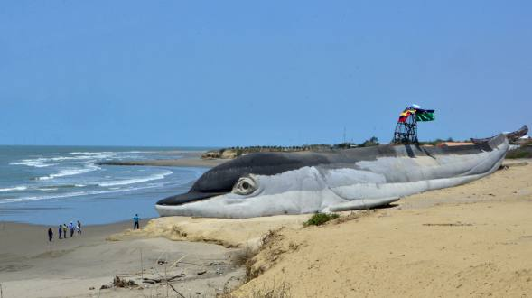
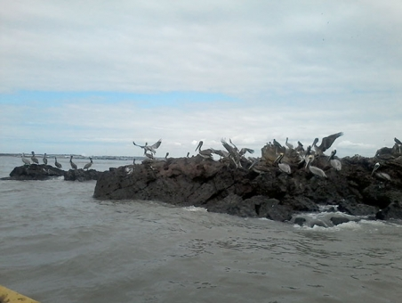

Posorja, situada en el Canal el Morro frente a la Isla Puná en el Golfo de Guayaquil, es uno de los principales puertos pesqueros de la provincia del Guayas.
Esta parroquia rural que originalmente era un balneario de Guayaquil y en el que su población se dedicaba mayoritariamente a la pesca, es actualmente un destino turístico, cuya mayor atracción son los paseos en lancha al Islote Los Farrallones (30 minutos de distancia de mar abierto).
El lugar es digno de ser conocido, debido a la rica fauna que posee. Allí, se pueden apreciar gran cantidad de aves como garzas, piqueros, fragatas, pelícanos etc. A su vez se pueden observar delfines “Nariz de Botella”, que con su esplendor acompañaran su viaje hasta esta maravillosa Isla.